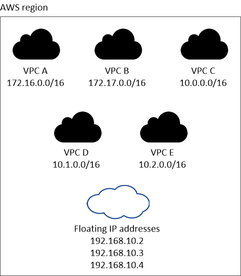
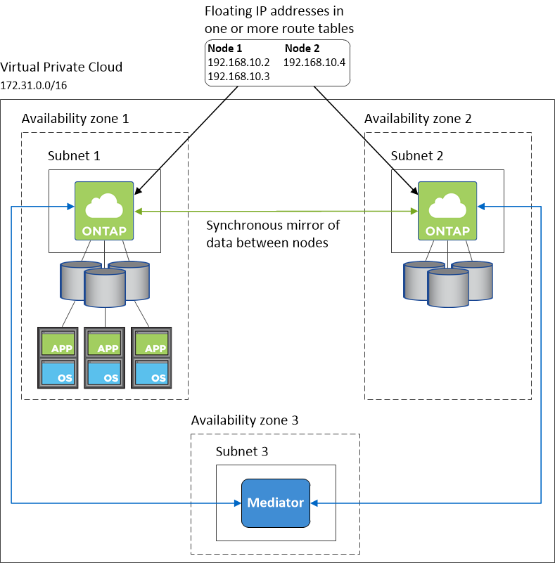

请求文档变更
请求文档变更 在 GitHub 上编辑
在 GitHub 上编辑 提供者指南
提供者指南AWS 中的 Cloud Volumes ONTAP 的网络要求
Cloud Manager 负责为 Cloud Volumes ONTAP 设置网络组件，例如 IP 地址，网络掩码和路由。您需要确保出站 Internet 访问可用，有足够的专用 IP 地址可用，正确的连接到位等。
一般要求
以下要求必须在 AWS 中满足。
Cloud Volumes ONTAP 节点的出站 Internet 访问
Cloud Volumes ONTAP 节点需要出站 Internet 访问才能向 NetApp AutoSupport 发送消息、 NetApp AutoSupport 主动监控存储的运行状况。
路由和防火墙策略必须允许 AWS HTTP/HTTPS 流量传输到以下端点，以便 Cloud Volumes ONTAP 可以发送 AutoSupport 消息：
如果您有 NAT 实例、则必须定义允许 HTTPS 流量从私有子网传输到 Internet 的入站安全组规则。
HA 调解器的出站 Internet 访问
HA 调解器实例必须具有与 AWS EC2 服务的出站连接、以便能够帮助进行存储故障转移。要提供连接、可以添加公共 IP 地址、指定代理服务器或使用手动选项。
手动选项可以是 NAT 网关或从目标子网到 AWS EC2 服务的接口 VPC 端点。有关 VPC 端点的详细信息，请参见 "AWS 文档：接口 VPC 端点（ AWS PrivateLink ）"。
专用 IP 地址
Cloud Manager 会自动为 Cloud Volumes ONTAP 分配所需数量的专用 IP 地址。您需要确保网络具有足够的可用专用 IP 地址。
Cloud Manager 为 Cloud Volumes ONTAP 分配的 LIF 数量取决于您部署的是单节点系统还是 HA 对。LIF 是与物理端口关联的 IP 地址。
单节点系统的 IP 地址
Cloud Manager 会将 6 个 IP 地址分配给一个节点系统：
-
集群管理 LIF
-
节点管理 LIF
-
集群间 LIF
-
NAS 数据 LIF
-
iSCSI 数据 LIF
-
Storage VM 管理 LIF
Storage VM 管理 LIF 与 SnapCenter 等管理工具结合使用。
HA 对的 IP 地址
与单节点系统相比， HA 对所需的 IP 地址更多。这些 IP 地址分布在不同的以太网接口上，如下图所示：

HA 对所需的专用 IP 地址数量取决于您选择的部署模式。部署在 _single AWS 可用性区域（ AZ ）中的 HA 对需要 15 个专用 IP 地址，而部署在 _Multiple _ AZs 中的 HA 对则需要 13 个专用 IP 地址。
下表提供了有关与每个专用 IP 地址关联的 LIF 的详细信息。
一个 AZ 中的 HA 对的 LIF
| LIF | 接口 | Node | 目的 |
|---|---|---|---|
集群管理 |
eth0 |
节点 1 |
对整个集群（ HA 对）进行管理管理。 |
节点管理 |
eth0 |
节点 1 和节点 2 |
节点的管理管理。 |
集群间 |
eth0 |
节点 1 和节点 2 |
跨集群通信，备份和复制。 |
NAS 数据 |
eth0 |
节点 1 |
通过 NAS 协议进行客户端访问。 |
iSCSI 数据 |
eth0 |
节点 1 和节点 2 |
通过 iSCSI 协议进行客户端访问。 |
集群连接 |
Eth1 |
节点 1 和节点 2 |
使节点可以彼此通信并在集群中移动数据。 |
HA 连接 |
Eth2 |
节点 1 和节点 2 |
发生故障转移时两个节点之间的通信。 |
RSM iSCSI 流量 |
Eth3. |
节点 1 和节点 2 |
RAID SyncMirror iSCSI 流量以及两个 Cloud Volumes ONTAP 节点与调解器之间的通信。 |
调解器 |
eth0 |
调解器 |
节点与调解器之间的通信通道，用于协助存储接管和交还过程。 |
多个 AZs 中 HA 对的 LIF
| LIF | 接口 | Node | 目的 |
|---|---|---|---|
节点管理 |
eth0 |
节点 1 和节点 2 |
节点的管理管理。 |
集群间 |
eth0 |
节点 1 和节点 2 |
跨集群通信，备份和复制。 |
iSCSI 数据 |
eth0 |
节点 1 和节点 2 |
通过 iSCSI 协议进行客户端访问。此 LIF 还可管理节点之间浮动 IP 地址的迁移。 |
集群连接 |
Eth1 |
节点 1 和节点 2 |
使节点可以彼此通信并在集群中移动数据。 |
HA 连接 |
Eth2 |
节点 1 和节点 2 |
发生故障转移时两个节点之间的通信。 |
RSM iSCSI 流量 |
Eth3. |
节点 1 和节点 2 |
RAID SyncMirror iSCSI 流量以及两个 Cloud Volumes ONTAP 节点与调解器之间的通信。 |
调解器 |
eth0 |
调解器 |
节点与调解器之间的通信通道，用于协助存储接管和交还过程。 |

|
如果部署在多个可用性区域中，则会与多个 LIF 关联 "浮动 IP 地址"，不计入 AWS 专用 IP 限制。 |
安全组
您不需要创建安全组，因为 Cloud Manager 可以为您提供这些功能。如果您需要使用自己的，请参见 "安全组规则"。
数据分层连接
如果要将 EBS 用作性能层、将 AWS S3 用作容量层、则必须确保 Cloud Volumes ONTAP 与 S3 建立连接。提供该连接的最佳方法是创建到 S3 服务的 VPC 端点。有关说明，请参见 "AWS 文档：创建网关端点"。
创建 VPC 端点时，请确保选择与 Cloud Volumes ONTAP 实例对应的区域、 VPC 和路由表。您还必须修改安全组才能添加出站 HTTPS 规则、该规则允许通信到 S3 端点。否则， Cloud Volumes ONTAP 无法连接到 S3 服务。
如果遇到任何问题，请参见 "AWS 支持知识中心：为什么我无法使用网关 VPC 端点连接到 S3 存储分段？"
连接到 ONTAP 系统
要在 AWS 中的 Cloud Volumes ONTAP 系统和其他网络中的 ONTAP 系统之间复制数据、您必须在 AWS VPC 和其他网络之间建立 VPN 连接—例如 Azure VNet 或您的公司网络。有关说明，请参见 "AWS 文档：设置 AWS VPN 连接"。
用于 CIFS 的 DNS 和 Active Directory
如果要配置 CIFS 存储、必须在 AWS 中设置 DNS 和 Active Directory 或将内部设置扩展到 AWS 。
DNS 服务器必须为 Active Directory 环境提供名称解析服务。您可以将 DHCP 选项集配置为使用默认的 EC2 DNS 服务器、该服务器不能是 Active Directory 环境使用的 DNS 服务器。
多个 AZs 中 HA 对的要求
其他 AWS 网络要求适用于使用多可用性区域（ Azs ）的 Cloud Volumes ONTAP HA 配置。在启动 HA 对之前，您应查看这些要求，因为在创建工作环境时，您必须在 Cloud Manager 中输入网络详细信息。
要了解 HA 对的工作原理，请参见 "高可用性对"。
- 可用性区域
-
此 HA 部署模型使用多个 AUS 来确保数据的高可用性。您应该为每个 Cloud Volumes ONTAP 实例和调解器实例使用专用的 AZ ，该实例在 HA 对之间提供通信通道。
每个可用性区域都应有一个子网。
- 用于 NAS 数据和集群 /SVM 管理的浮动 IP 地址
-
多个 AZs 中的 HA 配置使用浮动 IP 地址，如果发生故障，这些地址会在节点之间迁移。除非您自己，否则它们不能从 VPC 外部本机访问 "设置 AWS 传输网关"。
一个浮动 IP 地址用于集群管理、一个用于节点 1 上的 NFS/CIFS 数据、一个用于节点 2 上的 NFS/CIFS 数据。SVM 管理的第四个浮动 IP 地址是可选的。

如果将 SnapDrive for Windows 或 SnapCenter 与 HA 对结合使用，则 SVM 管理 LIF 需要浮动 IP 地址。 创建 Cloud Volumes ONTAP HA 工作环境时，您需要在 Cloud Manager 中输入浮动 IP 地址。在启动系统时， Cloud Manager 会将 IP 地址分配给 HA 对。
对于部署 HA 配置的 AWS 区域中的所有 vPC ，浮动 IP 地址必须不在 CIDR 块的范围内。将浮动 IP 地址视为您所在地区 VPC 之外的逻辑子网。
以下示例显示了 AWS 区域中浮动 IP 地址与 VPC 之间的关系。虽然浮动 IP 地址不在所有 VPC 的 CIDR 块之外，但它们可以通过路由表路由到子网。

Cloud Manager 可自动创建用于 iSCSI 访问和从 VPC 外部的客户端进行 NAS 访问的静态 IP 地址。您无需满足这些类型的 IP 地址的任何要求。 - 传输网关，用于从 VPC 外部启用浮动 IP 访问
-
如果需要， "设置 AWS 传输网关" 允许从 HA 对所在的 VPC 外部访问 HA 对的浮动 IP 地址。
- 路由表
-
在 Cloud Manager 中指定浮动 IP 地址后，系统会提示您选择应包含浮动 IP 地址路由的路由表。这将启用客户端对 HA 对的访问。
如果 VPC 中的子网只有一个路由表（主路由表），则 Cloud Manager 会自动将浮动 IP 地址添加到该路由表中。如果您有多个路由表，则在启动 HA 对时选择正确的路由表非常重要。否则，某些客户端可能无法访问 Cloud Volumes ONTAP 。
例如，您可能有两个子网与不同的路由表相关联。如果选择路由表 A ，而不选择路由表 B ，则与路由表 A 关联的子网中的客户端可以访问 HA 对，但与路由表 B 关联的子网中的客户端无法访问。
有关路由表的详细信息，请参见 "AWS 文档：路由表"。
- 与 NetApp 管理工具的连接
-
要对多个 AZs 中的 HA 配置使用 NetApp 管理工具，您可以选择两种连接方式：
-
在其他 VPC 和中部署 NetApp 管理工具 "设置 AWS 传输网关"。通过网关，可以从 VPC 外部访问集群管理接口的浮动 IP 地址。
-
在与 NAS 客户端具有类似路由配置的同一 VPC 中部署 NetApp 管理工具。
-
HA 配置示例
下图显示了多个 AZs 中特定于 HA 对的网络组件：三个可用性区域，三个子网，浮动 IP 地址和路由表。

连接器的要求
设置您的网络，以便 Connector 能够管理公有云环境中的资源和流程。最重要的步骤是确保对各种端点的出站 Internet 访问。
|
|
如果您的网络使用代理服务器与 Internet 进行所有通信，则可以从设置页面指定代理服务器。请参见 "将 Connector 配置为使用代理服务器"。 |
连接到目标网络
连接器要求与要部署 Cloud Volumes ONTAP 的 VPC 和 VN 集建立网络连接。
例如，如果您在公司网络中安装了连接器，则必须设置与启动 Cloud Volumes ONTAP 的 VPC 或 vNet 的 VPN 连接。
出站 Internet 访问
连接器需要通过出站 Internet 访问来管理公有云环境中的资源和流程。
| 端点 | 目的 |
|---|---|
获取许可信息并向 NetApp 支持部门发送 AutoSupport 消息。 |
|
在 Cloud Manager 中提供 SaaS 功能和服务。 |
|
https://cloudmanagerinfraprod.azurecr.io https://*.blob.core.windows.net |
升级 Connector 及其 Docker 组件。 |